1941 về nước trực tiếp lãnh đạo cách mạng; 2/9/1945 đọc Tuyên ngôn độc lập.
Pác BóTân TràoBa Đình
Bác đọc Tuyên ngôn Độc lập tại Ba Đình, 2/9/1945
Tên gọiNguyễn Ái Quốc → Hồ Chí Minh (từ 1942)
12ảnh tư liệu
3phim tư liệu
2trích dẫn
5câu trắc nghiệm
Tổng quan thời kỳ
1930 – 1935: bị Quốc tế Cộng sản phê phán là “hữu khuynh”
10/1930: Hội nghị Trung ương thay Chánh cương bằng Luận cương chánh trị
Quan điểm đặt giải phóng dân tộc lên đầu chưa được thừa nhận
6/1931: bị chính quyền Anh bắt ở Hồng Kông
1934 – 1938: học tập, nghiên cứu ở Liên Xô
1938: trở về Trung Quốc, tìm cách về nước
Kiên định độc lập dân tộc gắn liền với chủ nghĩa xã hội
Vận dụng sáng tạo chủ nghĩa Mác – Lênin vào Việt Nam
Thực tiễn chứng minh quan điểm của Người là đúng đắn
Thời kỳ từ 1930 đến 1945Pác Bó → Tân Trào → Ba ĐìnhNguyễn Ái Quốc Hồ Chí Minh (từ 1942)
28/1/1941: về nước tại Pác Bó (Cao Bằng)
5/1941: chủ trì Hội nghị Trung ương 8
19/5/1941: thành lập Mặt trận Việt Minh
1942 – 1943: bị giam ở Trung Quốc, viết Nhật ký trong tù
22/12/1944: chỉ thị thành lập Đội Việt Nam Tuyên truyền Giải phóng quân
8/1945: Hội nghị Tân Trào quyết định Tổng khởi nghĩa
8/1945: Cách mạng Tháng Tám thành công
2/9/1945: đọc Tuyên ngôn độc lập tại Ba Đình
Khai sinh nước Việt Nam Dân chủ Cộng hòa
Thắng lợi lớn đầu tiên của tư tưởng Hồ Chí Minh
Các mốc sự kiện
bị Quốc tế Cộng sản phê phán là “hữu khuynh”
Hội nghị Trung ương thay Chánh cương bằng Luận cương chánh trị
bị chính quyền Anh bắt ở Hồng Kông
học tập, nghiên cứu ở Liên Xô
trở về Trung Quốc, tìm cách về nước
về nước tại Pác Bó (Cao Bằng)
chủ trì Hội nghị Trung ương 8
thành lập Mặt trận Việt Minh
bị giam ở Trung Quốc, viết Nhật ký trong tù
chỉ thị thành lập Đội Việt Nam Tuyên truyền Giải phóng quân
Hội nghị Tân Trào quyết định Tổng khởi nghĩa
Cách mạng Tháng Tám thành công
đọc Tuyên ngôn độc lập tại Ba Đình
Ảnh tư liệu
1
Những năm tháng thử thách (1931 – 1943)
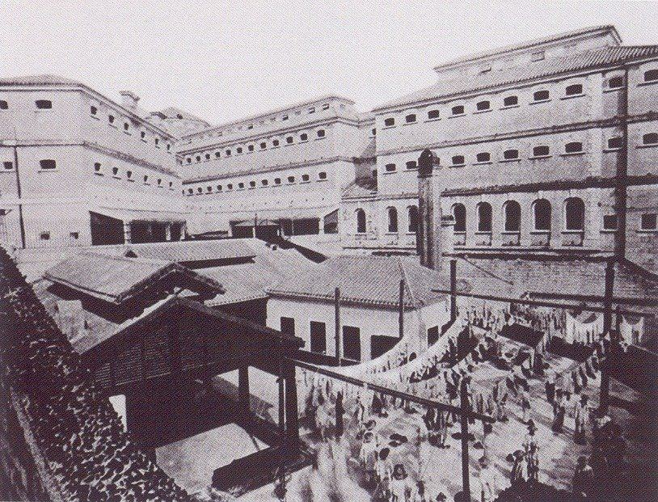
Nhà ngục Victoria, Hồng KôngNơi Nguyễn Ái Quốc bị chính quyền Anh giam giữ những năm 1931 – 1933.
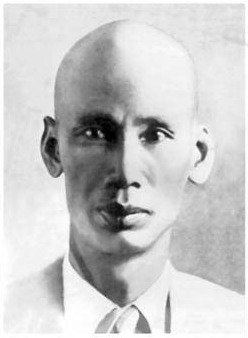
Nguyễn Ái Quốc thời kỳ ở Hồng KôngBị bắt tháng 6/1931, Người vẫn giữ vững khí tiết, kiên định con đường cách mạng đã chọn.
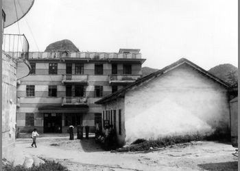
Trụ sở xã Túc Vinh, huyện Đức Bảo, tỉnh Quảng Tây (Trung Quốc)Nơi chính quyền Tưởng Giới Thạch bắt giữ Hồ Chí Minh tháng 8/1942. Trong thời gian bị giam, Người viết tập thơ Nhật ký trong tù.
2
Trở về Tổ quốc (1941)
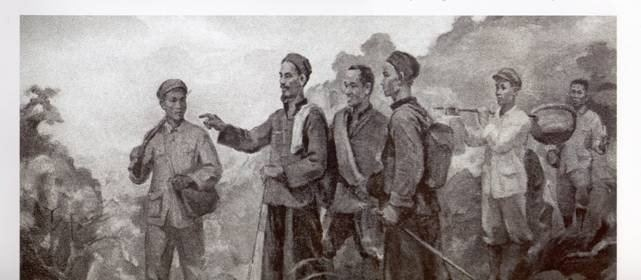
Nguyễn Ái Quốc trở về Tổ quốc (28/1/1941)Sau 30 năm xa Tổ quốc, Người về nước qua cột mốc 108, Hà Quảng, Cao Bằng (tranh minh họa).
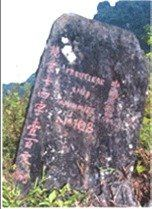
Cột mốc 108Dấu mốc nơi Người đặt chân trở về Tổ quốc.
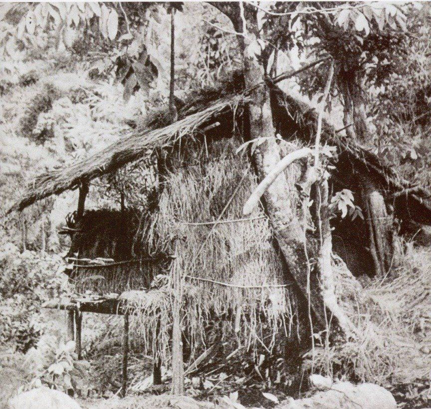
Lán Khuổi Nậm, Pác Bó (Cao Bằng)Nơi Nguyễn Ái Quốc chủ trì Hội nghị Trung ương 8 (5/1941), đặt nhiệm vụ giải phóng dân tộc lên hàng đầu và thành lập Mặt trận Việt Minh.
3
Tổng khởi nghĩa (8/1945)
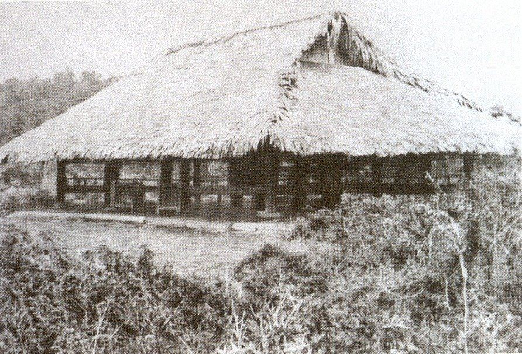
Đình Tân Trào, Tuyên QuangNơi họp Quốc dân Đại hội (8/1945), quyết định Tổng khởi nghĩa, bầu Ủy ban Dân tộc giải phóng do Hồ Chí Minh làm Chủ tịch.
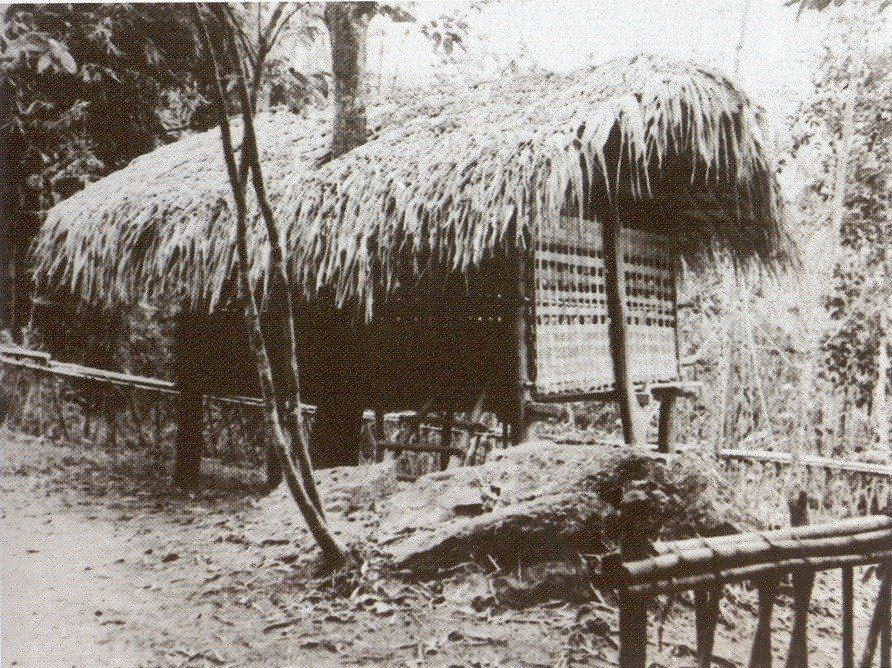
Lán Nà Lừa, Tân TràoNơi Hồ Chí Minh ở và làm việc trong những ngày diễn ra Hội nghị toàn quốc của Đảng và Quốc dân Đại hội.
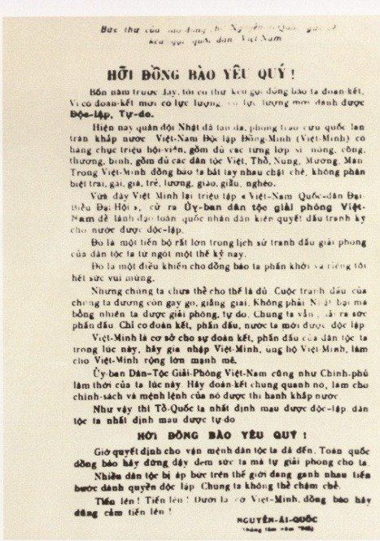
Thư kêu gọi Tổng khởi nghĩa (8/1945)Thư của Nguyễn Ái Quốc gửi đồng bào cả nước, được truyền đi khắp nơi trước ngày Tổng khởi nghĩa.
4
Ngày độc lập (2/9/1945)
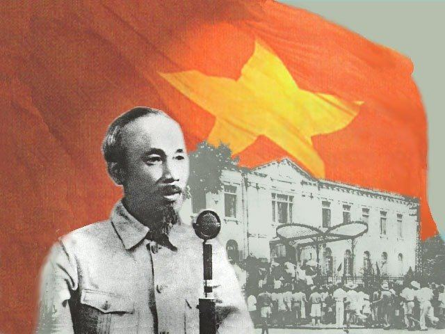
Chủ tịch Hồ Chí Minh đọc Tuyên ngôn độc lậpSáng 2/9/1945, tại Quảng trường Ba Đình, Hà Nội, Người đọc Tuyên ngôn độc lập, khai sinh nước Việt Nam Dân chủ Cộng hòa (ảnh ghép trên nền cờ đỏ sao vàng).
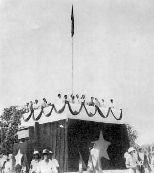
Lễ đài tại Quảng trường Ba Đình (2/9/1945)Nơi diễn ra cuộc mít tinh lịch sử tuyên bố độc lập.
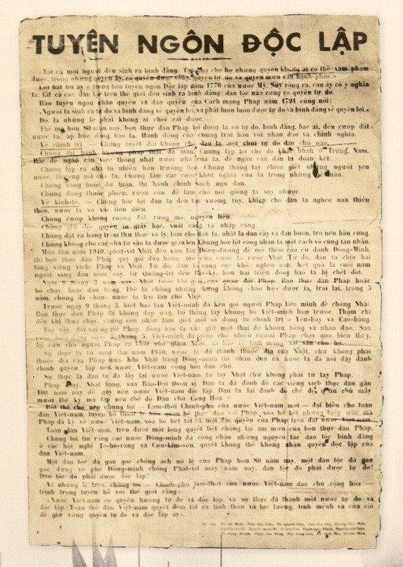
Bản Tuyên ngôn độc lậpVăn kiện lịch sử khẳng định quyền độc lập, tự do của dân tộc Việt Nam.
Phim tư liệu
Phim tư liệu đang được cập nhật
Trích dẫn, tác phẩm
Trích dẫn · Thời kỳ từ 1930 đến 1945
Bấm vào trích dẫn hoặc ảnh để phóng to
01
“
Giờ quyết định cho vận mệnh dân tộc ta đã đến. Toàn quốc đồng bào hãy đứng dậy đem sức ta mà tự giải phóng cho ta.
02
“
Nước Việt Nam có quyền hưởng tự do và độc lập, và sự thật đã thành một nước tự do độc lập.